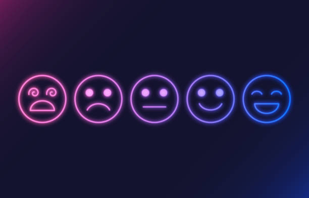

Business Data Analyst with 2+ years of experience turning operational data into reports and dashboards that teams use to make decisions. Currently pursuing an MSc in Business Analytics at NEOMA Business School in Paris.
Before building anything, I clarify what the business needs to decide. At TaskUs, that meant turning reporting requests from 5+ teams into documented requirements and Jira tickets for the data engineering team.
A report is only useful if people trust it. I reconcile sources and check for duplicates, nulls and missing values before anything is released.
On the Mastercard and Deliveroo accounts, I built 10+ Power BI dashboards and recurring SQL reports that Operations managers used to track SLAs, backlogs and delivery KPIs.
Projects where analysis translated directly into measurable business outcomes.
Analyzed 1M+ e-commerce transactions from Pakistan's largest online marketplace to identify factors driving order cancellations and uncover revenue optimization opportunities. Found 19% cancellation rate representing ~475M PKR in lost revenue.

Analyzed 584,000+ e-commerce transactions from Pakistan's largest online retailers to uncover customer purchasing patterns, revenue trends, and payment preferences using R and modern data science practices.
Built a 3-page interactive Power BI dashboard for a Ministry-level stakeholder identifying which Dutch municipalities carry the highest cyclist accident risk relative to cycling infrastructure. Developed a star-schema model, cleaned and translated the full dataset from Dutch in Power Query, and created 6 DAX measures — including a per-km risk score that flipped the investment recommendation from Amsterdam to Leiden (3× more accidents per km of cycleway).
Specialising in advanced analytics, data-driven decision making, and business strategy at one of France's leading Grande Écoles. Open to 6-month end-of-study internship across France and Benelux.
Foundation in business, commerce, and analytical thinking.